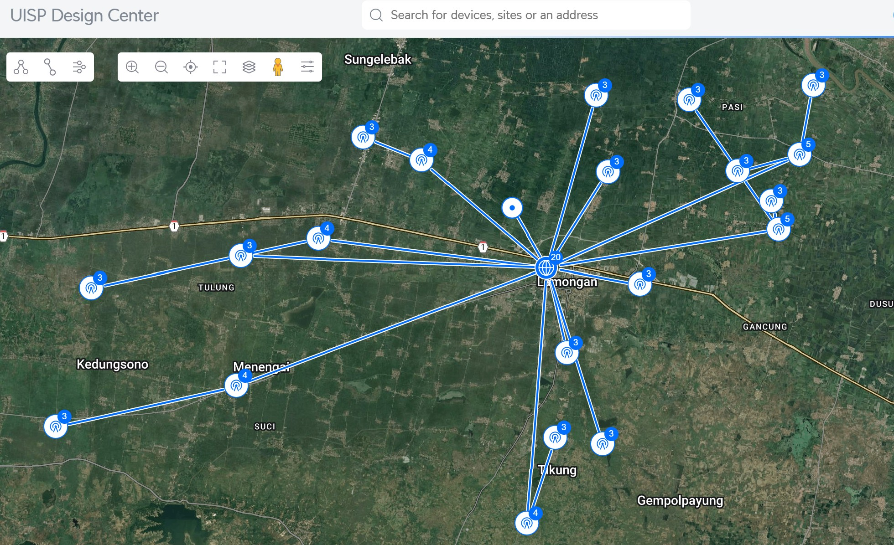
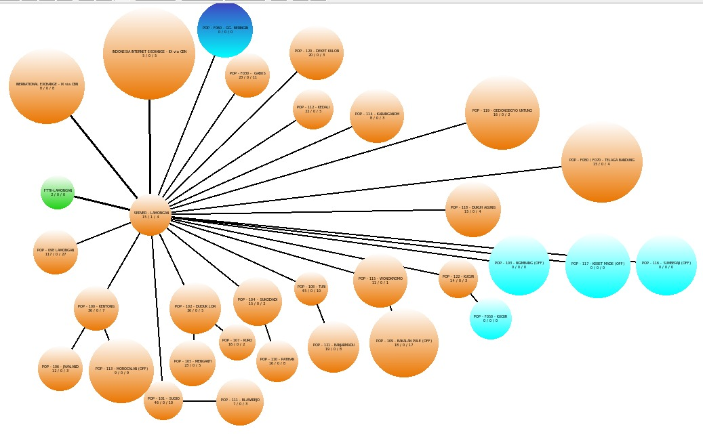
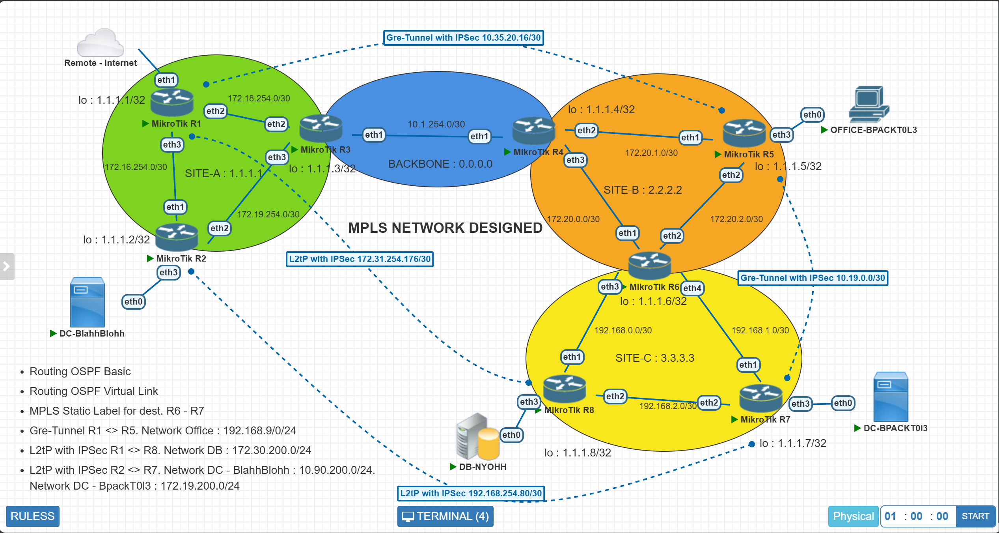
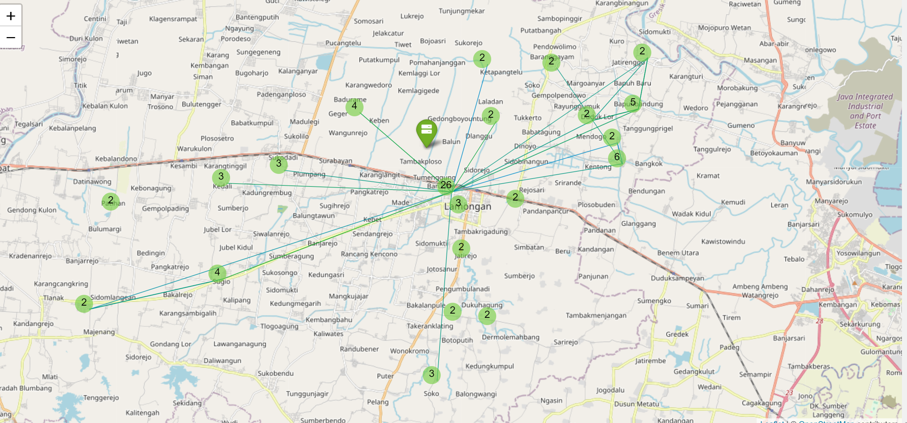
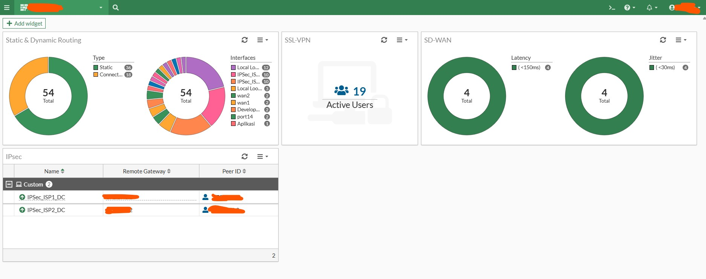
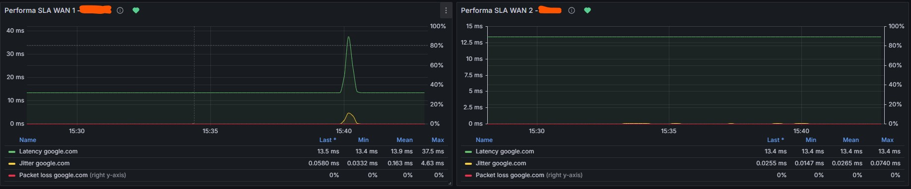

INFRASTRUCTURE LABS
Network & Security Projects
Practical exploration of enterprise-grade networking, high-performance monitoring stacks, and secure infrastructure deployments.
📡 Outdoor Wireless Distribution at 22 BTS Sites with MikroTik & Air Fiber

- Network construction targeting and system-wide planning.
- Topology design covering Core, Distribution, Access, and PtP/PtMP links.
- RF Site planning using Ubiquity Maps and Google Earth Pro.
- Budgeting, resource allocation, and hardware selection.
- Physical installation of high-gain antennas and outdoor gear.
ISP Scale
View Details
🖥️ Local Network Monitoring with MikroTik The Dude

- VMware host setup for high-availability MikroTik CHR.
- Instance activation and "The Dude" package integration.
- Visual topology mapping with hierarchical device trees.
- Automated alert system via Telegram and Local Pop-ups.
- Custom SNMP OID monitoring for bandwidth and system health.
NOC Tooling
View Details
🌐 Dynamic Multi-Area Routing with OSPF Virtual-Links

- Multi-Area OSPF architecture implementation.
- Virtual-Link deployment for non-backbone area convergence.
- Network summarization for routing table optimization.
- Convergence testing and failover scenario simulation.
- Documentation of Area configuration and LSDB status.
Core Routing
View Details
📊 Visual ISP Monitoring Stack with LibreNMS

- LibreNMS deployment for RT/RW Net ISP monitoring (300+ nodes).
- Geographic Weather Maps integration with GPS coordinates.
- Instant Telegram alerting for hardware failures/downtime.
- Nagios Plugin integration for PING latency monitoring.
- Dashboard design for traffic analysis and SLA reporting.
ISP NOC
View Details
🛡️ FortiGate Next-Generation Firewall Implementation

- Security Policy configuration for server zone isolation.
- SD-WAN configuration with WAN load balancing.
- FortiGate SSL VPN deployment for secure remote access.
- Traffic analysis using FortiView and analytical logs.
- IPSec Site-to-Site Tunneling with SD-WAN optimization.
SecOps
View Details
📈 Advanced SD-WAN SLA Monitoring via Telegraf & Grafana

- Telegraf SNMP agent setup targeting FortiGate clusters.
- Indexing SD-WAN metrics into OpenSearch for long-term data.
- Custom Grafana dashboard design with dynamic variables.
- Intelligent alerting on latency spikes via Telegram.
- Weekly performance reporting and capacity planning insights.
Monitoring
View Details